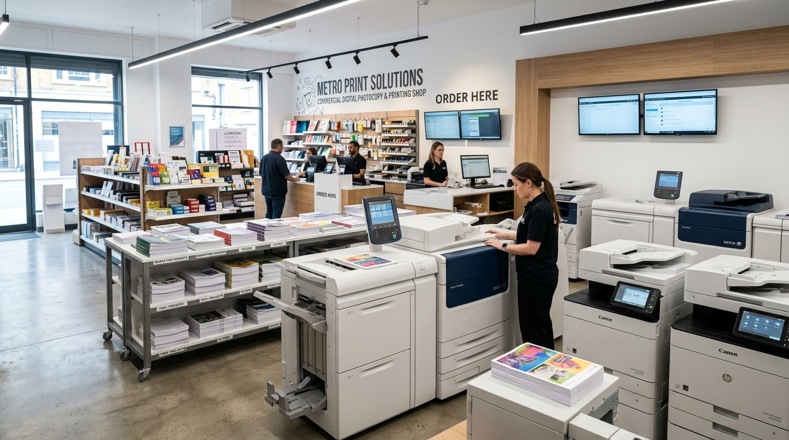

💇♀️
Beauty Parlour
Everyday beauty and grooming services in a convenient campus location.
Ask about services →RAMCO INSTITUTE OF TECHNOLOGY
Beauty care, tailoring & stitching, laundry, printing and everyday essentials in a convenient campus location.
Everyday beauty and grooming services in a convenient campus location.
Ask about services →Custom dress stitching, alterations, kurti/blouse designing, and prompt campus tailoring.
Ask about stitching →Convenient garment-care, steam pressing, and dry-cleaning services for campus users.
Ask about services →
Quick document copying, academic project prints, scanning, and color printing.
Ask about services →
Personal-care products, clothing, accessories and useful daily essentials.
Ask about products →STORE & AMENITY CATEGORIES
Personal-care, skin care and grooming services & products.
Custom tailoring, rapid alteration, fitting, and women's apparel essentials.
Mobile covers, tempered glass, daily essentials and campus accessories.